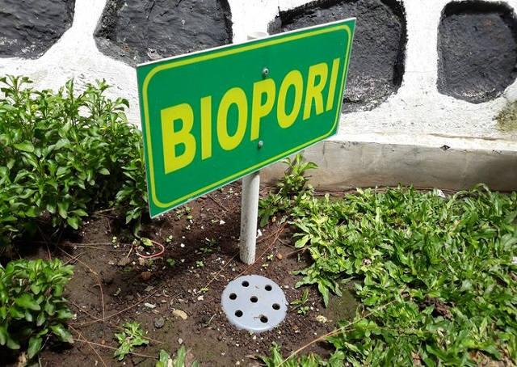

Salah satu hal yang dapat kita lakukan di area rumah adalah dengan
membuat lubang biopori. Lubang biopori adalah silinder yang
ditanam secara vertikal di tanah dengan kedalaman 1 meter,
biasanya dipasang pada area tempat air berkumpul, misalnya sekitar
pepohonan, selokan, serta pekarangan rumah. Lubang serapan ini
merupakan teknologi ramah lingkungan untuk dapat mengatasi
genangan dan banjir.
Cara pembuatannya pun sangat mudah yaitu dengan mengubah sampah
organik menjadi kompos yang ditimbun di dalam tanah. Selain itu
lubang biopori sangat baik untuk akar tanaman dan mengurangi
penyakit malaria yang ditimbulkan dari genangan air. Lubang ini
mampu membuat penyerapan air ke tanah jadi lebih maksimal,
sehingga menambah cadangan air tanah sekaligus mencegah terjadinya
banjir saat musim hujan.
Selain biopori, membuat sumur resapan sangat bagus untuk mencegah
banjir. Diameter lubangnya pun lebih besar dari biopori, cara ini
sangat cocok diterapkan di kota-kota besar yang kebanyakan
jalannya sudah diaspal.
Untuk membuat sumur resapan tersebut anda perlu lahan yang luas
dan jauh dari septitank dengan jarak sekitar 10 m. Anda bisa
membuat sumur resapan ini dengan menyewa tenaga ahli dalam bidang
membuat sumur cara bor. Dengan menggunakan sumur resapan atau
biopori ini rumah akan semakin aman dari banjir meski curah
hujannya tinggi.
Membuat Lubang Biopori dan Sumur Resapan
